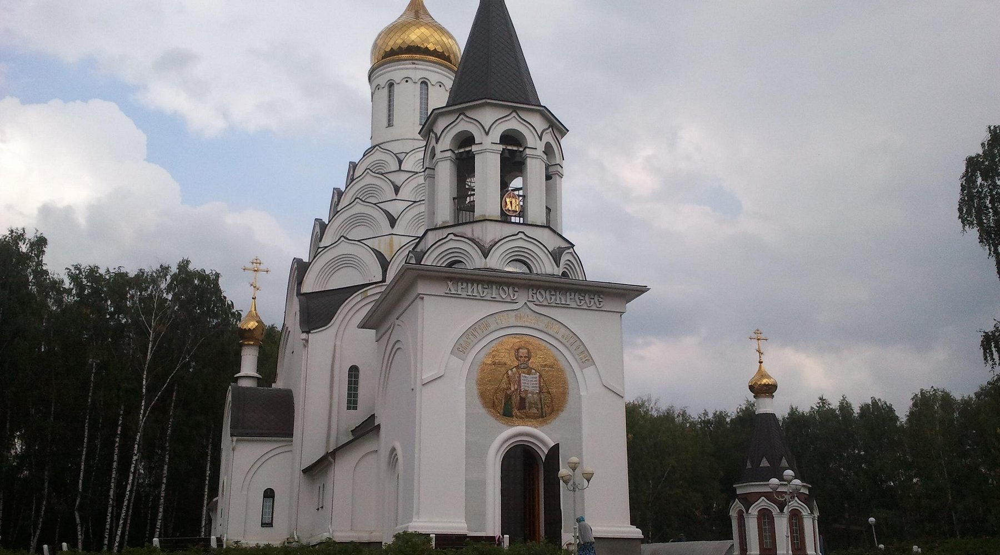

Главный объект · урочище Николо-Остров
Храм Николая Угодника
Церковь Николая Чудотворца — каменный сельский храмовый комплекс в лесном ландшафте Чухломского района.
58.8768, 43.6051
Открыть страницу храмаНажмите на отметку, чтобы увидеть объект, его фотографию и координаты. Первым открыт храм Николая Угодника в Николо-Острове.

Отметки отражают рабочие координаты проекта. Картой можно пользоваться с клавиатуры: переходите между кнопками клавишей Tab.
Церковь Николая Чудотворца — каменный сельский храмовый комплекс в лесном ландшафте Чухломского района.
58.8768, 43.6051
Открыть страницу храма
Архивный и современный виды памятника, материалы о поселении.
58.8567, 43.7188
Открыть страницу объектаРаздел об историческом поселении пополняется по мере проверки фотографий и архивных сведений.
58.8476, 43.6645
Открыть страницу объекта
Каменный храм 1824 года, построенный в стиле классицизма.
58.8250, 43.6500
Открыть страницу храмаСтраница объекта и материалы, ожидающие дальнейшего уточнения.
58.7955, 43.7944
Открыть страницу храма
На странице храма собраны фотографии фасада, колокольни, портика и интерьера. Интерактивная отметка на карте открывается первой, чтобы посетитель сразу видел главный объект проекта.